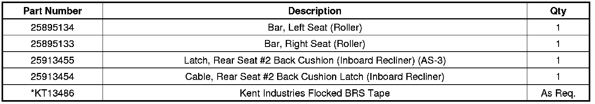
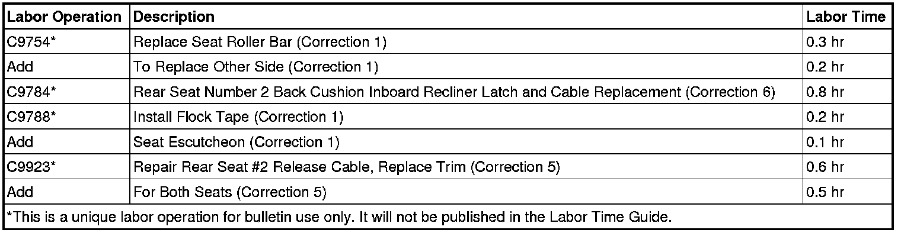

Interior - Third Row Seat Won't Release From Floor: Overview
TECHNICALBulletin No.: 10-08-50-004B
Date: June 20, 2012
Subject: Third Row Seat(s) Difficult to Remove, Install, Release, Tumble, Fold, Squeak Noise (Perform Repairs as Outlined)
Models:
2007-2013 Cadillac Escalade, Escalade ESV
2007-2013 Chevrolet Suburban, Tahoe
2007-2013 GMC Yukon, Yukon Denali, Yukon XL, Yukon XL Denali
All Equipped with Rear Seat RPOs AS3 or AW2
Supercede:
This bulletin is being revised to add the 2013 model year. Please discard Corporate Bulletin Number 10-08-50-004A (Section 08 - Body and Accessories).
The intent of this bulletin is to provide diagnostic tips and procedures for some common areas that may cause issues with third row seat operation. Review both the description of third row seat proper operation, and the list of conditions and corrections, before attempting any repairs.
Exercise the Seat to Ensure Proper Operation
Note
The AS3 RH 3rd row seat includes the seat belt assembly for the center passenger position. As such, the right seat weighs more than the left seat. The left seat will require more effort pushing down on the rear of the seat to ensure the rear seat latches are fully secured.
Securing seat latches to floor:
With the seat un-installed, folded and laying flat on the cargo area floor, using two hands on the seat (not the handle), roll the seat into position and allow the front latches to drop and secure into place, just under the weight of the seat itself. Press down firmly on the top rear of the seat to ensure the rear latches are fully secured.
If the front and/or rear latches will not secure, refer to Condition 1 below.
Raising the seat back:
Lift the seat back to the upright position. Ensure the seat back will latch in the upright position.
If the seat back cannot be raised, refer to Condition 2 below. If the seat back will raise, but will not remain latched in the upright position, refer to Condition 3 below. If the seat back requires high effort to raise, refer to Condition 6 below.
Lowering the raised seat back:

Lift lever #1 and push the seat back down.
If the seat back cannot be lowered, refer to Condition 6 below.
Raising the folded seat up to tumbled position:
Lift and hold lever #2 Only (Do Not grasp seat removal handle #3, as this may partially disengage the front latches), until the seat is about 1/2 way up. If lever #2 is let go of too early, the seat will not be able to be lifted past 1/3 of the way off the floor.
If the folded seat cannot be raised to the tumble position, refer to Condition 4, below, followed by Condition 1, below if necessary.
Lowering and removing the seat:
Lower the seat from the tumble position; lift and hold lever #2 Only while lowering the seat (do Not grasp seat removal handle #3, as this may partially disengage the front latches), press down firmly on the top rear of the seat to ensure the rear latches are fully secured. Using seat removal handle #3 Only, pull straight rearward (do not lift) to slide the seat back and remove.
IF the folded seat cannot be removed, refer to Condition 5 below. If the seat can be removed, but the front latches are difficult to release, refer to Condition 1, below.
Reinstall the seat:
Using two hands on the seat (not the handle), roll the seat into position and allow the front latches to drop and secure into place, just under the weight of the seat itself. Press down firmly on the top rear of the seat to ensure the rear latches are fully secured.
Parts Information
For part numbers, usage and availability of Rear Seat #2 Trim, see Cover, R/Seat #2 Bk Cush. Group 16.720 of the appropriate Parts Catalog.
*Call 1-888 Yes-Kent for ordering information.

Warranty Information
For vehicles repaired under warranty, use:

Additional 3rd row seat operational information can be viewed on gmtraining.com under Video on Demand GM Service Know How broadcast 10211.07D July 2011 Emerging Issues "Full-Size Utilities 3rd Row Seat Removal."

Disclaimer